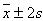

Statistical Analysis of Experimental Data
The statistical analysis of experimental data is an important requirement of an engineer. In the context of this project we were required to develop a Java applet program which computes statistical information based on an input data file consisting of (x, y) data observation pairs. The following notes present a briefly introduction (background) on the statistical topics that the applet computes.
Process your data sample & obtain your data sample statistics
If you would like to process your data samples, it is required to store data as (x,y) pairs in a text (.txt) file and process it by opening file menu and chossing open. Particularly, the file must consist of rows of data. Each row must have two columns separated by space(s). Each row represents a (x,y) sample, where the first and the second column contain the "x" and "y" values of your data respectively.
Introduction
The progress of the science and specifically of the engineering science has been closely related to successful experimentation. An experiment can be classified as of deterministic or random-non deterministic.
The former class is composed by experiments where the observable consistently gives the same value each time the experiment takes place under the same conditions. An experiment that consists of calculation of the capacitance, inductance and resistance elements of an analog filter, when we apply a specific voltage waveform at input and we observe a specific voltage waveform at output, can be assumed as deterministic.
The later class consists of experiments where each time the experiment is performed, a different outcome may be observed although the conditions are the same. The experiment that consists of sending a particular string of e.g. 1000 bits into a link and observing the bits received at the far end in error can be assumed as non-deterministic experiment. The interpretation of such experiments can be developed by means of statistical methods.
Suppose now, that an engineer wishes to discover the lifetime of specific type devices working under real time conditions. Ideally, the experimenter would like to take every such a device that exists and record its lifetime. This collection of results would then represent the population of lifetimes. However, experimental limitations usually prevent values for the entire population being known. The best that can be hoped for is that a collection of observations (sampling) taken from the population will enable good estimates (e.g. mean, variance, etc.) of the unknown population to be determined. When the observations are collected in such a way that each population value has an equal chance of being included, the sample is said to be random and the estimates deduced from the sample are called sample estimates (e.g. sample mean, sample variance and sample standard deviation, etc.).
Specifically, numbers computed from a data set to help us to estimate its relative frequency histrogram are called numerical descriptive measures. Those measures fall into three categories:
- a. measures of central tendency which provide an estimation of the location of the centre of the relative frequency distribution.
- b. measures of variation which provide a measurement of data’s spread.
- c. measures of relative standing which describe the relative position of an observation within the data set.
Numerical descriptive measures computed from a sample data are called statistics whereas those computed from the population are called parameters. However, we might made a somewhat arbitrary distinction between data analysis procedures that are model independent (descriptive statistics, e.g. mean, variance, correlation, etc.) and those that are model dependent (e.g. Least squares fits, etc.).
Sample mean
Perhaps, the most common measure of central tendency is the sample (arithmetic) mean, defined as follows: The sample mean of a set of "n" observations  is the average of the observations: (1).
is the average of the observations: (1).
- a. The sample mean estimates the value around which central clustering occurs.
- b. For values drawn from a probability distribution with very broad "tails", the mean may converge poorly, or not at all, as the number of sampled points is increased. That is the mean is often sensitive to vary large or very small observations.
Sample standard deviation
The most commonly used measures of data variation are the sample variance and the sample standard deviation, defined as follows: The sample variance of a set of "n" observations is defined to be (2).
- The latter expression in (2) is more convenient for calculation as rounding errors tend to be less a problem.
The sample standard deviation of "n" observations is equal to the square root of the sample variance: (3).
If data set has an approximately mound-shaped (e.g. Gaussian) relative frequency distribution, then the following rules of thumb may be used to describe the data set:
- i. Approximately 68% of the observations will lie within 1 standard deviation of their mean (i.e. within the interval ).
- ii. Approximately 95% of the observations will lie within 2 standard deviations of their mean (i.e. within the interval ).
- iii. Almost all the observations will lie within 3 standards deviation of their mean (i.e. within the interval ).
There is a long discussion about why the denominator in (2) is "(n-1)" instead of "n". However, it is beyond the scope of this tutorial to present such a discussion. On the other hand it might be worth mentioning that it can be shown that gives a better estimate of the population variance being an unbiased estimator.
As the mean depends on the first moment of data, so the variance and the standard deviation depend on the second moment. It is not uncommon to be dealing with a distribution whose second moment does not exist (i.e. infinite). In that case the variance as well as the standard deviation are useless as measures of the data’s width around its central value. The values obtained by (2) & (3) will not converge with increased number of points nor show any consistency from data set to data set drawn from the same distribution. Higher moments involving higher power of the input data are almost always less robust that lower moments.
Skewness & Kurtosis
The third moment of data is referred as skewness and the fourth moment of data is referred as kurtosis. Particularly, are defined as follows:
The skewness of a set of "n" observations  is defined to be (4).
is defined to be (4).
The kurtosis of a set of "n" observations  is defined to be (5).
is defined to be (5).
- a. The skewness characterises the degree of asymmetry of a distribution around its mean - the shape of distribution. Of course any set of "n" observations is likely to give a non-zero value for (4), even if the underlying distribution is in fact symmetrical (zero skewness). For (4) to be meaningful we need to have some idea of the standard deviation of the underlying distribution as an estimator of the skewness which depends on the shape and rather on the tail of the underlying distribution.
- b. A positive skewness signifies a distribution with an asymmetry tail extending out towards more positive "x", whereas a negative skewness signifies a distribution with an asymmetry tail extending out towards more negative "x".
- c. As mentioned, the mean is often sensitive to "extreme" - outlier observations. Consequently, it will shift towards the direction of skewness (i.e. the tail of the distribution).
- d. As being with skewness, kurtosis is also a non-dimensional quantity. It measures the relative peakendness or flatness of a distribution relative to a normal distribution. Actually, the "-3" term in (5) makes the kurtosis zero for a normal distribution. A distribution with positive kurtosis is termed leptokurtic whereas a distribution with negative kurtosis is termed as platykurtic. An in-between distribution is referred as mesokurtic.
Least squares method
One of the most important applications of statistics involves estimating the mean value of a dependent-response variable "y" or predicting some future value of "y" based on the knowledge of a set of related independent (in algebraic rather than probabilistic terms) variables . The object is to develop a prediction equation (or model) that expresses "y" as a function of the independent variables , enabling the prediction of "y" for specific values of the independent variables.
The models used to relate a dependent variable "y" to the independent variables are called regression models expressing the mean value of "y" for given values of as a linear function of a set of known parameters.
In the context of this project, we introduce the simple linear regression model that relates "y" to a single independent variable "x" and particularly we fit this model to a set of data using the method of least squares.
A simple linear regression model makes the assumption that the mean value of "y" for a given value of "x" graphs as a straight line and that points deviate about this line of means by random amount : (6) where : the point where the line intercepts y-axis and : slope of the line.
In order to fit a simple linear regression model to a set of data, we must find estimators for the unknown parameters , of the line of means, making the following assumptions about :
- a. The average of errors over an infinitely long series of experiments is zero for each of the independent variable "x" so that (7).
- b. The variance of the probability distribution of is constant for all settings of the independent variable "x".
- c. The probability distribution of is normal.
- d. The errors associated with any two different observations are independent.
In actual practice, the assumptions need not hold exactly in order for least squares estimators and test statistics (e.g. chi squared) need to possess the measure of reliability that we would expect from a regression analysis.
In order to choose the "best fitting" line for a set of data, we shall estimate and by using the method of least squares. That particularly, method has the significant property of being the only line having the sum of squares of the deviations minimum although many lines exist for which the sum of deviations (errors) is equal to zero.
To find the least squares line for a set of data, lets assume that we have a sample of "n" data points . The straight-line model for the response "y" in terms of "x" is given by (6). The line of means is given by (7) and the fitted line is represented as: (8) where is an estimator of "E(y)" and a predictor of some future value of "y" which would be obtained by substituting into the (8), whereas are estimators of and respectively.
The prediction equation (8) is called the least squares line if the quantities make the sum of squares of the deviations of "y" about the predicted values for all of the "n" data values minimum.
It is easily proved (by setting the two partial derivatives of the sum of squares of deviations with respect to equal to zero respectively and solving the resulting linear system) that:
- (9)
- (10) where,
- (11) and
- (12)
The method of least squares line fits a straight line through any set of points even when the relationship between the variables is not linear.
Concluding this section it might be worth mentioning a number of properties of the least squares method:
- i. The mean of the sampling distribution of is given by: (13) whereas the variance by: (14).
- ii. An estimator of the variance of the random error can be computed by the sample data and is given by (15) where (16) and "(n-2)" the degrees of freedom for error. It is likely to be found that the most of the observations lie within "2s" or "1.22" of the least squares line.
- iii. A way to measure the association between two variables "y" and "x" is to compute the Pearson product – moment correlation coefficient which provides a quantitative measure of the strength of the linear relationship between "x" and "y" in the sample. It is computed as follows: (17) and it is always between no matter the units of "x", "y" are. A value near or equal to zero implies little or no linear relationship between "x" and "y". The closer to , the stronger the linear relationship. If exactly , all points fall exactly on the least squares line. Positive values imply that "y" increases as "x" increases. Negative values imply that "y" decreases as "x" increases. In practice, fitting a straight line through "n" points should only be considered when the correlation coefficient satisfies . Note that high correlation does not imply that a change in "x" causes a change in "y" but that a linear trend may exist between "x" and "y". It is easy to show that: (18)
- iv. A convenient way to measure how well the least squares equation performs as a predictor of "y" is to compute the following quantity: (19) called coefficient of determination. It can be shown that it is equal to the square of the simple linear correlation coefficient. If "x" contributes little or no information for the prediction of "y" then the determination coefficient will be nearly or equal to zero. If "x" does contribute information, determination coefficient will be positive or "1" in the case that all the points fall on the least squares line.
Chi-Squared statistics
As mentioned, the assumptions made in the previous section for the least squares estimators need not hold in order and test statistics like chi-squared statistics may be used to estimate the goodness of fit of the data to the e.g. least squares method model.
We may assume that the chi-squared statistics between the least squares line and the data points is computed by the following relation: (20).
In order to estimate the significance of the chi-squared statistics, we shall apply the incomplete gamma function , where "a" the degrees of freedom which is equal to [n-number of constraints] (the usual case is number of constants=1) and "x2" the chi-squared statistics. The incomplete gamma function is defined by: , where , having the following properties:
- i.
- ii.
- iii.
- iv.
Except for the special case where "a" is an integer, we can not obtain a close form for the integral of the gamma density function. Consequently, the cumulative distribution function must be obtained using approximation procedures.